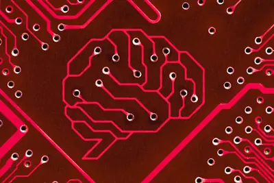
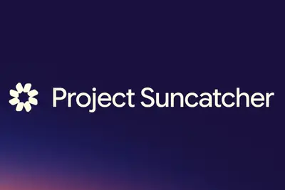
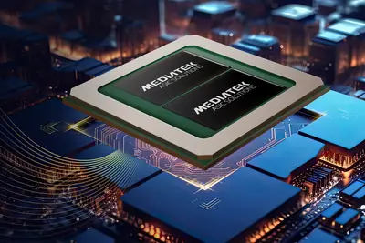
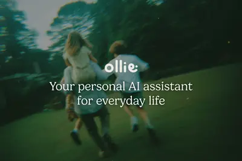
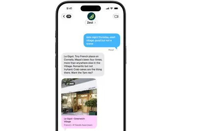
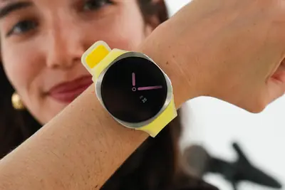
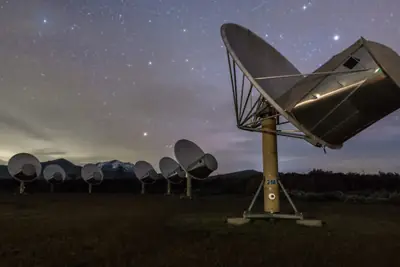
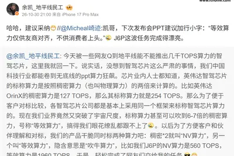
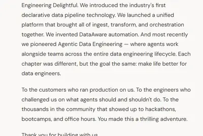

全部主題
Blackstone's forecast is just a prediction, but naturally, a high junk rating would make it more difficult and costlier for Anthropic to raise the money to keep funding its massive spending that has undergirded its business.
Boom’s airliner may be delayed, and its data center power business lost a customer.
IT之家 10 月 31 日消息，苹果公司今天（10 月 31 日）发布公告，宣布将面向中国 iPhone 18 Pro 等机型用户，于 11 月 4 日开放测试，并于 12 月推出的 iOS 27.3 更新，在国内上线首批 Apple 智能（Apple Intelligence）核心功能。 IT之家援引官方新闻稿介绍， 苹果公司明确在 Siri、写作工具及视觉智能这 3 类 Apple 智能体验中 ，使用阿里巴巴的千问，包括文本与图像理解相关功能。 在 Siri 方面，苹果公司表示在“处理特定请求”时接入千问，利用其知识协助用户。用户还可以针对照片以及
OpenAI, Google, Microsoft, and Anthropic say they will adopt a new standard that publishers can use to opt out of being scraped by AI, as reported earlier by Search Engine Roundtable. With this control, publishers can apply their AI training preferences across multiple AI compani

But it's still early days for the relatively new e-commerce use case.
The first TPU in space is running a Google DeepMind Gemma 4 model and writing cheesy poetry.

After months of bombarding mathematicians with a relentless stream of AI-generated results, OpenAI CEO Sam Altman says he sympathizes with researchers struggling to make sense of it all. But he has no intention of stopping - and hints there could be much more to come from the com
IT之家 10 月 31 日消息，当地时间 10 月 1 日，谷歌成功发射了“逐日者计划”（Project Suncatcher）的原型卫星。此后数周，团队逐步完成了在轨测试与调试清单，其中包括为主机与 TPU 托盘通电，并顺利完成了早期的机器学习测试。 当地时间 10 月 30 日，谷歌宣布达成了“Hello World”里程碑： 在轨运行的数据中心级 TPU 首次给出了 AI 响应 。 本周地面工程师下发首个提示词时，要求预装在卫星上的谷歌 DeepMind 模型 Gemma 4 创作一首关于身处太空的俳句。模型作答如下： Blue marble b
IT之家 10 月 31 日消息，昨日（10 月 30 日）召开的 2026 年第三季度（7~9 月）财报电话会上，联发科（MediaTek）确认已获得第二家人工智能专用集成电路（AI ASIC）客户（官方暂未公布），预计该项目将于 2028 年进入量产并开始贡献营收。 IT之家查询公开资料，联发科的第一家 AI 专用集成电路（AI ASIC）客户是谷歌。其合作主要围绕 Google 的 TPU（Tensor Processing Unit）AI 加速器；联发科首款数据中心 AI 加速器已于 2026 年 9 月开始小量出货。 针对市场猜测其第二家人工智

IT之家 10 月 31 日消息，Anthropic 调整了 Claude 针对个人消费者的付费套餐命名： 原 Max 20x 计划更名为 Ultra 计划（价格仍为 200 美元 （IT之家注：现汇率约合 1,335 元人民币） / 月）， 并对通过验证的账户取消了 5 小时会话用量限制 （仍受每周限额约束）； 原 Max 5x 计划则直接简化为 Claude Max（100 美元 （现汇率约合 667.7 元人民币） / 月）。 据介绍，Ultra 计划每周拥有 Pro 计划使用量的 10 倍，拥有优先访问权限（率先体验新模型、功能和产品）， 目前仅
IT之家 10 月 31 日消息，由香港生成式人工智能研发中心（HKGAI）研发的本地 AI 智能助理“港话通”（HKChat）于 10 月 30 日迎来更新， 推出全新 AI 音乐生成功能 。 新功能接入由 HKGAI 研发的 YuE2 音乐大模型（「YuE2」） ，用户随口哼唱或上传图片，再输入对歌曲的构思，AI 便可即时谱写出兼具专业编曲和人声献唱的原创歌曲。 全新音乐功能已在“港话通”App 上线，用户只需在首页点击底部的“音乐”按钮，即可进入创作界面。 HKGAI 官方表示，“港话通”作为香港市民的 AI 生活助手， 其全新音乐功能以粤语流行曲
IT之家 10 月 31 日消息，OpenAI 于当地时间 10 月 30 日发布博文表示，维护社区安全始终是 OpenAI 的重中之重。其日常工作包括主动向执法机关通报迫在眉睫的暴力威胁。仅在 2026 年第三季度，OpenAI 就向执法部门移交了 200 余起案件线索。 OpenAI 承诺定期发布《社区安全报告》 （Community Safety Report），系统公开在暴力预防、其他社区安全议题以及各项防护机制实际成效方面的进展。 首期报告将于 2027 年初正式发布 ，涵盖 2026 年下半年的安全数据，此后每半年更新一次。 IT之家获悉，O
As an increasing number of AI assistants flood the market, the founder of Ollie, an assistant that respected its users' privacy, says it will be shutting down in a week.

博通（Broadcom）與市場調查機構 Radius Tech 合作，發布研究報告《2026 年私有雲展望：人工智慧轉折點》（Private Cloud Outlook 2026: The AI Tipping Point）。這份報告基於全球 1,800 位高階 IT 決策者的實證調查（其中 69% 來自員工人數 5,000 人以上的大型企業），揭示企業在人工智慧從概念驗證正式跨入日常生產環境時，如何因應公有雲成本失控與地緣政治監管風險，進而重塑雲端基礎設施策略。 報告指出，隨著生產級 AI（正式上線、每天運作的 AI 應用）對算力持續性、數據安全與成本
Intel is being hurt by PC sales as the AI industry gobbles memory and other components causing PC prices to rise.
No Halloween costume? Just be a deceptively cute AI agent icon, a PHP vulnerability, or sleepy time Bryan Johnson.
Big Tech is pouring billions into AI infrastructure, but mounting debt, negative cash flow, and growing investor skepticism are raising questions about the sustainability of the AI spending boom.
It's still unknown how attackers got access to Anthropic's verified Cursor account.
People who love AI don't always love telling others they used it.
Only a quarter of Android phones have even made it to Android 16.
Can't agree on where to eat? Zest's AI concierge can combine everyone's tastes, put restaurant options to a vote, and make the reservation.

Low costs and offline security mean magnetic tape still has a job.
Starbucks could eventually show you a personalized digital menu when you pull up to the drive-thru. During an earnings call on Thursday, Starbucks CEO Brian Niccol said the company is going to explore "experiences that recognize participating customers as they arrive, present per
The FDA-approved sleep apnea tracking feature will first come to the Galaxy Watch Ultra 2, Watch 9, and Ring.

I’m finally ready to upgrade to a smart calendar – and Amazon’s newest Echo device looks like an organizational solution for my family and I.
A vulnerability in some Netgear routers could allow an attacker with access to your network to run malicious commands on the device.
Applying for FAFSA may get messy as DOJ “ghost student” crackdown ramps up.
The cautionary Theranos tale takes on a new significance in the AI era, when companies that have never turned a profit are raising capital at trillion-dollar valuations.
一項最新研究指出，人工智慧（AI）技術可能讓胰臟癌的偵測時間大幅提前。研究團隊開發的系統「REDMOD」，能從 […]
IT之家 10 月 30 日消息，华为官方今日发布了鸿蒙生态一周更新速览，并宣布 Mate 90 系列小艺全面升级， 核心提升了小艺帮记和小艺触发式 AI 两大能力 。 根据华为官方描述，在搭载 HarmonyOS 7 系统的华为 Mate 90 系列手机上，基于鸿蒙智能感知引擎，小艺帮记和小艺触发式 AI 两项能力升级， 目前已有超百款应用接入这两项能力 。 低功耗即可感知内容、文字、图像，实现系统级主动服务，小艺帮记可随手记录并智能提取和总结； 需要填充信息或进行更多操作时，智能填充与推荐等服务主动送达。 据IT之家此前报道，在 10 月 1 日的华
While science fiction lore tells us that humans will meet extraterrestrial life in the form of little green men, the detail that should raise hairs this Halloween is this: the search for extraterrestrial intelligence took a major leap forward with AI, and it increasingly focuses

Pope Leo XIV says AI systems should be "disarmed," adding that humans "have the responsibility to guide, change and, when necessary, reject its applications." In Friday's Papal Address, Pope Leo encourages United Nations member states to "take concrete steps toward banning lethal
IT之家 10 月 30 日消息，硅基流动在港股发行上市申请获中国证监会备案受理。据弗若斯特沙利文资料，该公司是中国最大的独立生态词元（Token）供应商，注册用户超过 1000 万名，服务企业客户超过 1.3 万家。 IT之家注：硅基流动成立于 2023 年，定位为独立生态词元供应平台，不自建大模型，也不直接出售算力。 其业务逻辑是将英伟达、华为昇腾、沐曦、摩尔线程等厂商的异构芯片通过自研推理引擎统一调度，让 DeepSeek、Qwen、Kimi 等主流模型在池化算力上运行，再以 Token 为单位对外提供服务。截至 2026 年 6 月，平台累计支持
IT之家 10 月 30 日消息，随着 AI 技术突飞猛进，许多开发者在大模型辅助加持之下对各种老旧机型进行折腾，例如在诺记吧贴吧就有一位开发者 FORZGC 宣布在 AI 辅助之下为“死亡”多年的微软 Windows Phone 系统打造了一系列应用。 该开发者表示，其利用 AI 扒取各大网站 API，进而将其打包为 Windows Phone 系统可用的应用包，虽然只是“简单实现，只能浏览”，但“如果愿意折腾还可以实现更多功能”。同时其进一步表示，“没想到当年没落的系统，现在可以凭借 AI 发挥发挥余热，不至于完全无用”。 参考IT之家此前报道，微软
At TechCrunch Founder Summit 2026, happening November 4 at SoWa Power Station in Boston, networking powered by Braindate is designed to make those conversations easier to find, whether they are in 1:1 or small-group on-site meetings. Register before the event starts to save up to
IT之家 10 月 30 日消息，OpenAI CEO 萨姆・奥尔特曼（Sam Altman）在参加《Cheeky Pint》播客节目时表示，他理解数学家面对 AI 研究成果大量涌现时的处境，但 OpenAI 需继续公布具有重要价值的科学发现。 他认为，人类有权了解宇宙运行的基本规律，公司不应将重大的基础科学发现长期保留在内部。 奥尔特曼在节目中承认，OpenAI 此前公布数学研究成果的方式存在需要改进之处。他表示，希望在推动科学进步的同时，尽可能尊重数百年来推动数学等学科发展的研究群体，并帮助相关领域的研究人员适应 AI 带来的变化。 OpenAI 今
IT之家 10 月 30 日消息，地平线创始人兼 CEO 余凯今晚在微博发文，回应了关于地平线能否推出数千 TOPS 算力智驾芯片的提问，并嘲讽了当前智驾芯片行业的算力标称方式。 余凯表示，智驾芯片是严肃的事情，但中国科技行业在 PPT 算力上“卷到无底线”。他提到，芯片业内人士都清楚，英伟达智驾芯片的标称算力按稠密算力的两倍计算，例如 Orin X 稠密算力为 127 TOPS，标称即为 254 TOPS。 他称，为便于客户对标比较，各智驾芯片公司基本采用同一框架标称算力。但业界目前已“突破宇宙尺度”，标称算力可吹到稠密算力的 6 至 7 倍，并冠以“

海信 E7S Pro RGB-Mini LED 电视今年 3 月发布： 65 英寸 2808 玲珑控色分区，首发国补价 6999 元，今日 6060 元。 75 英寸 3888 玲珑控色分区，首发国补价 8499 元， 今日 7099 元 。 85 英寸 5184 玲珑控色分区，首发国补价 11499 元， 今日 8621 元 100 英寸 7560 玲珑控色分区，首发国补价 18499 元， 今日 13899 元 。 此款参与京东家电家居多买多返（售价下方可见活动详情），买 5000 返 100 元购物卡，75 英寸折合 6999 元、85 英寸 85
IT之家 10 月 30 日消息，根据欧盟委员会网站最新公示，苹果公司今年早些时候收购了美国数据工程技术公司 Ascend.io 。这笔交易涉及相关知识产权许可及部分员工招聘安排。 Ascend.io 官网目前已发布停运通知，但未直接提及苹果。 欧盟委员会最新公布的交易信息显示，苹果与 Ascension Labs 达成相关协议，后者是 Ascend.io 的运营主体。 根据披露内容，苹果将获得向该公司部分员工提供工作机会并聘用他们的权利，同时获得 Ascend.io 知识产权的非独占许可，并可受让其部分专利。这意味着此次交易并非传统意义上对整家公司的全
